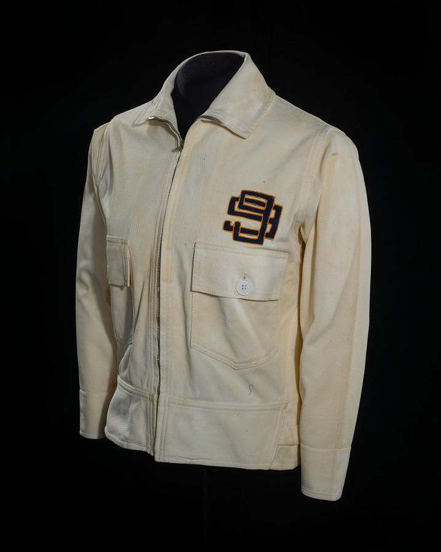
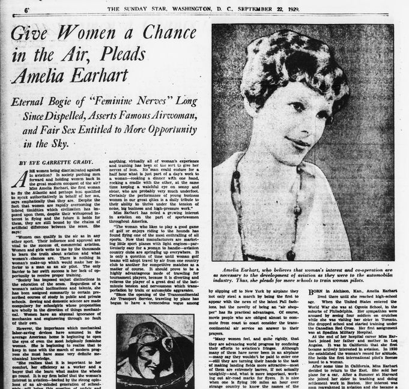
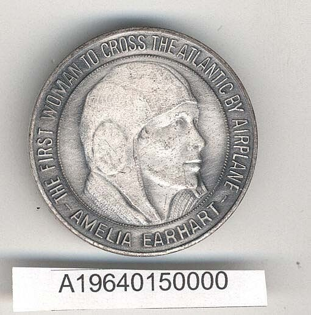
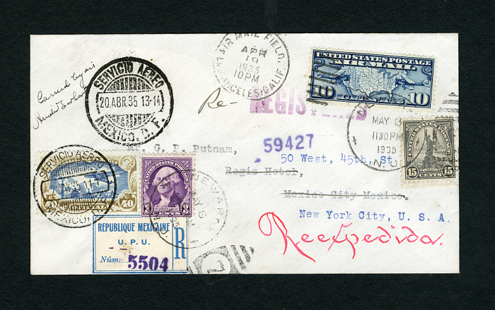
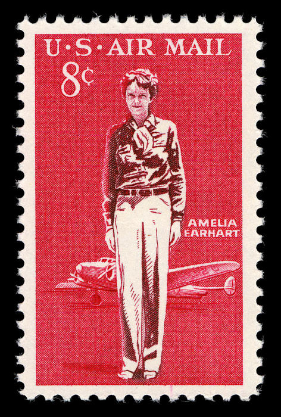
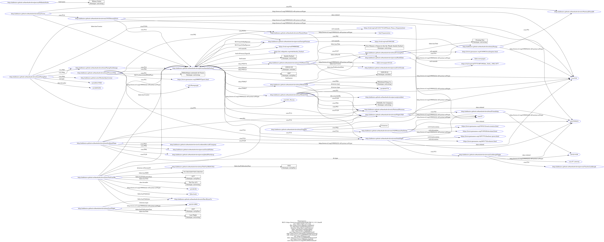
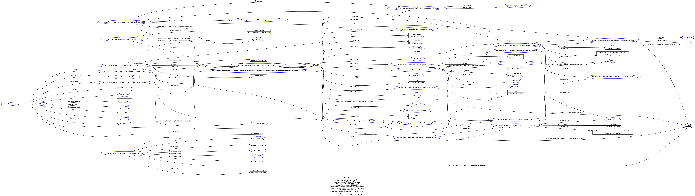

Amelia Archive

A gradual process of mapping, abstraction, and analysis was carried out on the study domain and each individual item. Initially, a Conceptual Map and an Entity/Relationship (E/R) Model were created to represent the data. Subsequently, the metadata standards employed by different institutions to describe these items were analyzed and aligned.
Amelia Archive
Amelia Earhart is celebrated as a pioneering
aviator and a symbol of courage and innovation in
aviation history. Born in 1897, she developed a
passion for flying at a young age and quickly made
a name for herself in a male-dominated field. In
1932, Earhart became the first woman to fly solo
across the Atlantic Ocean, a feat that earned her
international acclaim and the nickname "Lady
Lindy." Her daring flights challenged societal
norms and inspired countless women to pursue
careers in aviation and beyond. Earhart's ambition
didn't stop there. She set numerous records and
became the first person to fly solo from Hawaii to
California. Her contributions extended beyond
aviation; she was a vocal advocate for women's
rights and an active member of the Ninety-Nines,
an organization that supported female pilots. Her
legacy is a testament to her determination to
break barriers and redefine what was possible for
women of her time. In 1937, during an attempt to
circumnavigate the globe, Earhart and her
navigator, Fred Noonan, vanished over the Pacific
Ocean. Despite extensive search efforts, they were
never found, leaving behind one of history's most
enduring mysteries. Amelia Earhart’s life and
mysterious disappearance continue to captivate and
inspire people worldwide, embodying the spirit of
adventure and the relentless pursuit of dreams.
Our project is to focus on this idea: Amelia Earhart’s
personal items and archival documents about her
stored in museums and libraries. These items can
mostly express the career life and achievements
of Amelia Earhart, including her personal equipments,
aircraft, autobiography, medals awarded, and archival
documents about her. We aim to collect these items in
a linked open data environment, and develop an open
data model that connects all the items related to
Amelia Earhart’s life archive, in which we adopted
Semantic Web methods such as ontologies, RDF and URIs.
Our Items
We selected ten items that could help us describe some of Amelia Earhart’s incredible achievements.
LOCKHEED VEGA 5B
The Lockheed Aircraft Company introduced the Lockheed Vega 5b in 1927, and it soon became a pilots' favorite. Aviators like Wiley Post (the first pilot to fly solo around the world), Jimmie Mattern and Jacqueline Cochran soon began flying with this aircraft. Amelia Earhart bought her first Vega 5b (her "Little Red Bus") in 1930 and set two records while flying in: in May 1932, she became the first woman to fly solo across the Atlantic, and not much later, in August of the same year, she flew solo and nonstop from Los Angeles to Newark, becoming the first woman to do so.
see moreFLYING SUIT
In the 1930s, Amelia Earhart designed a two-piece, cotton-made flying suit for the Ninety-Nines. The piece was never adopted as an official suit of the organization, but the stylized logo was kept. In the same years, Amelia experimented with designing her own line of clothes, called "Amelia Fashions". Her clothes were supposed to be comfortable and wrinkle-free and adopted unusual materials, like parachute silk or fabric used for airplane wings.
see moreARTICLE
On September 22, 1929, an interview of Amelia Earhart was published in the Evening Star. In the article, written by Eve G. Grady, the aviatrix fights for more opportunities for women pilots, arguing against the prejudices that used to see young women as not suited for "dangerous" activities such flying.
For the transformations click here.
see moreFlying Goggles
Amelia Earhart wore these goggles In the 1929 Women's National Air Derby, one of the earliest women's air races. In 1957, the goggles were donated to the Smithsonian Institution.
see moreMedal, First Woman to Cross the Atlantic by Airplane
This dramatic 1928 flight in the Fokker Friendship as the first woman passenger, with pilots Stultz and Gordon, brought Amelia international attention and the opportunity to earn a living in aviation. This medal is to commemorate her as the First Woman to Cross the Atlantic by Airplane.
see moreMedal, National Geographic Society Medal
In 1932, the National Geographic Society awarded its Bronze medal to Amelia Earhart for becoming the first woman (and the only person since Charles Lindbergh) to achieve a solo transatlantic flight.
see moreArrival of Amélie Earhart and her husband in Paris
The photo of the arrival of Amelie Earhart and her husband Mr. Putnam in Paris, aviator who crossed the Atlantic.
see moreflight cover
This cover was carried on Amelia Earhart's flight from Los Angeles, California, to Mexico City on April 19, 1935 and carried back to Newark, New Jersey, on her non-stop flight from Mexico to the United States on May 8-9, 1935.
see more8c Amelia Earhart single
This postage stamp, issued on July 24, 1963, is part of the Scott Catalogue USA C68 series, focusing on the themes of Planes & Pilots and Women's Heritage. It commemorates the contribution of Amelia Earhart's as an important woman pilot to aviation history.
see moreThe fun of it
The Fun of It is Amelia Earhart's second book after her travelogue 20 Hrs. 40 Min. The first woman to solo across the Atlantic recalls her youth, early encounters with flying, career as a pilot, and feminine pioneers in aviation.
see moreOur Team
 Teresa M. Sava
Teresa M. Sava
 Jiayi Chen
Jiayi Chen
KNOWLEDGE ORGANIZATION
The knowledge organization process forms the foundation of our analysis of Amelia Earhart's life and legacy. Our approach creates a representation of Earhart from concrete facts about her career to abstract concepts surrounding her influence on gender roles in aviation history.
First Step: Conceptual Map

Second Step: E/R Model

The conceptual Map is transformed to E/R model, a more abstract dataview, representing items and relationships between them as entities.
Third Step: Metadata Analysis
| # | ITEM | TYPE | DATE | INSTITUTION | METADATA STANDARD |
|---|---|---|---|---|---|
| 1 | Flying Goggles, Amelia Earhart | Personal equipment | ca. 1920-1930s | National Air and Space Museum | CCO |
| 2 | Amelia Earhart's Lockheed Vega 5b | Aircraft | 1927-1929 | National Air and Space Museum | CCO |
| 3 | Medal, First Woman to Cross the Atlantic by Airplane | Awards | National Air and Space Museum | CCO | |
| 4 | Give women a chance in the air, pleads Amelia Earhart | Journal article, interview | 1929 | Library of Congress | MARC21 |
| 5 | 99's flying suit | Flight clothing | 1930 | National Air and Space Museum | CCO |
| 6 | Arrivée d'Amélie Earhart et de son mari à Paris, aviatrice qui a traversé l'Atlantique, son mari, M. Putnam | Picture | 1932 | National Library of France (Europeana) | EDM |
| 7 | National Geographic Society Medal | Awards | 1932 | National Air and Space Museum | CCO |
| 8 | Los Angeles-Mexico City-Newark flight cover signed by Amelia Earhart | Covers & Associated Letters | May 8-9, 1935 | National Postal Museum | CCO |
| 9 | 8c Amelia Earhart single | Postage Stamp | 1963 | National Postal Museum | CCO |
| 10 | The Fun of it | Book | 1977 | Internet Archive | MARC21 |
We examine the standards of how each source institution catalogs their information, and apply typical or suitable conventions for the metadata frameworks. This process ensures consistent analysis for different information sources.
Fourth Step: Metadata Alignment
| # | Property | DC/DCTerms | MARC21 | CCO | EDM |
|---|---|---|---|---|---|
| 1 | Creator | dc:creator | 245$c | Creator Display (Role) | dcCreator |
| 2 | Contributor | dc:contributor | 040 | Creator Display, Creator Extent | dc:contributor |
| 3 | Publisher | dc:publisher | 260$b | Creator Display (Role) | dcPublisher |
| 4 | Owner | / | 561 | (Owner, CDWA) | / |
| 5 | Vendor | / | 938$a * | (Commissioner role, CDWA) | / |
Then we compare these different standards and standardize descriptions into a unified format. In this way, we translate various standards into a common language for easier organization and analysis of data from different sources.
THEORETICAL MODEL

The theoretical model is an abstraction of the E/R model, allowing for more details for the items and relationships between them. We design the theoretical model based on questions including Who? Where? When? and What?
ENHANCED E/R MODEL

The enhanced E/R model
Conceptual Model

To create the conceptual model we have selected the ontologies that could better describe and express our items, their properties and the relations between them. We have chosen Dublin Core for its general properties and coverage; CIDOC-CRM for its detailed description of objects, events and their relations; FOAF for its focus on people and groups. We have also used fabio to provide bibliographic descriptions of the book and the article, and rdaa to describe specific relations between the objects and the people.
Knowledge Representation
We have then created the CSV files, one per each item.
After this, have proceeded with the RDF production. Firstly, we have minted the required URIs: we have created one URI for item, plus the URIs to identify important people, organizations and additional resources.
Then, we have created the RDF triples and its related turtle serialization, focusing on the resources and on the items related to Amelia Earhart’s records of 1928 and 1932. When possible, we have aligned our resources with links coming from VIAF, GEONAMES and Wikidata. To enrich our dataset, we have used the properties owl:sameAs, foaf:isPrimaryTopicOf and SKOS:broader.
Github Repository  